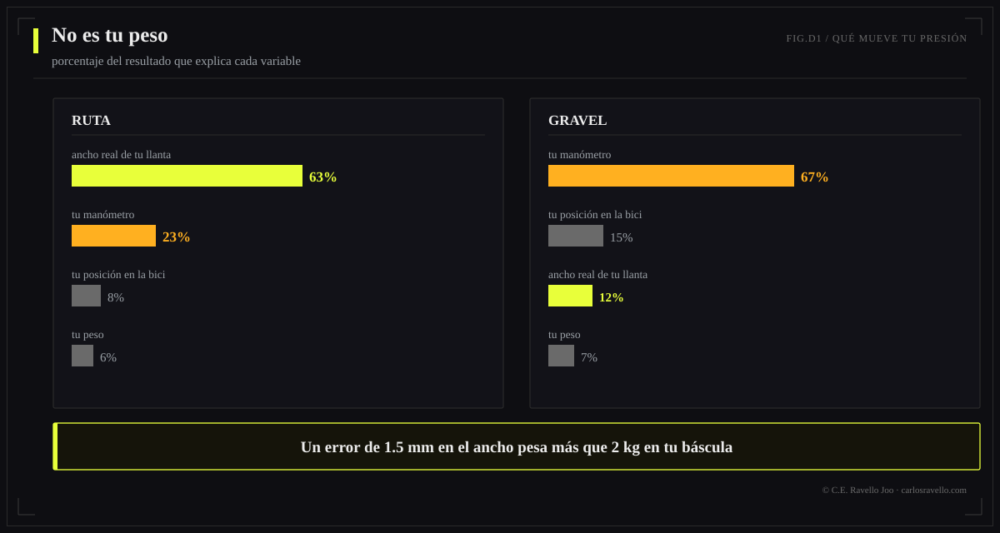
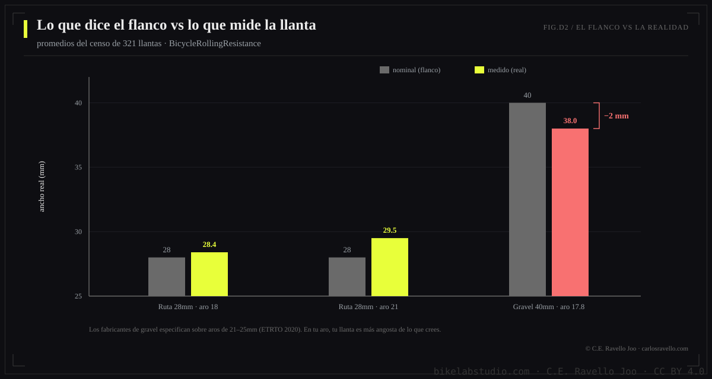

BikeLab Studio // Divulgación · Presión de Llantas
Tres calculadoras serias te dan tres respuestas distintas para la misma bici. Ninguna miente. Ninguna te dice su margen de error. Aquí está la física de por qué — y la herramienta que sí te lo dice.
Toma una bici de ruta con llantas de 28 mm, un ciclista de 83 kg con todo y equipo, y pregúntale a las dos calculadoras más respetadas del mundo qué presión llevar. SILCA te dirá 70 / 71.5 PSI. Rene Herse te dará un rango "soft–firm" de 54 a 67 PSI — para ambas ruedas por igual. Entre el extremo suave de uno y la recomendación del otro hay 17 PSI de diferencia. Para la misma bici. El mismo ciclista. El mismo día.
¿Quién miente? Nadie. SILCA optimiza velocidad pura con datos de atletas profesionales. Rene Herse optimiza el balance confort-velocidad medido en carretera real con carcasas flexibles. Los fabricantes de tu llanta optimizan que no los demanden. Tres funciones objetivo distintas, tres respuestas distintas — y las tres te entregan un número seco, con cara de verdad absoluta, sin decirte jamás cuánta incertidumbre carga ese número.
Cuando construimos el BikeLab PSI Calculator hicimos algo que ninguna calculadora del mercado ha publicado: un análisis de sensibilidad global — 81.920 evaluaciones del modelo por configuración — para medir qué variable domina el resultado. La hipótesis obvia era el peso: más kilos, más presión, fin de la historia. La hipótesis obvia resultó falsa.

Aquí viene la parte que literalmente no existe en ninguna otra fuente. Medimos — sobre el censo completo de 321 llantas testeadas por el laboratorio independiente BicycleRollingResistance — cuánto mide de verdad una llanta montada versus lo que dice su flanco:
¿Y por qué importa? Porque acabamos de decir que el ancho es la variable que domina el cálculo. Si tu calculadora asume que tu "28" mide 28, ya partió con el error más caro del sistema. La nuestra corrige el ancho con la regresión de esas 321 mediciones — y si tienes un calibre y mides tu llanta inflada, se lo dices y la incertidumbre de tu resultado se reduce a un tercio.

El BikeLab PSI Calculator te devuelve algo así: trasera 73 PSI ±10, frontal 68 PSI ±9. Ese "±" no es decoración — es el intervalo donde cae el 90% de los resultados cuando propagas las incertidumbres reales de tus inputs (tu peso ±2 kg, el ancho real ±1.5 mm, tu posición sobre la bici ±3 puntos). Diez mil simulaciones por cálculo, en tu navegador.
Y hay un dato que dejamos fuera de la banda a propósito: el error de tu manómetro. Ese error es de tu instrumento, no del modelo — mezclarlo haría parecer imprecisa una herramienta que en realidad está siendo honesta sobre algo que no controla. En gravel, donde tu manómetro domina, te lo advertimos aparte: usa uno digital.
Debajo de la herramienta hay un criterio físico con nombre y apellido: la deflección constante del 15% de Frank Berto, medida sobre 50 llantas en los 90. Encima, correcciones calibradas con datos públicos (el censo de 321 llantas), un acople frontal validado contra SILCA y Rene Herse, y los techos de seguridad ETRTO. Todo documentado, con sus números de validación — incluidas las divergencias: para riders de más de 90 kg recomendamos más firme que SILCA, y el white paper explica exactamente por qué eso es una decisión y no un error.
Si eres ingeniero, estudiante, o simplemente de los que quieren ver las ecuaciones: el white paper técnico completo está en nuestra sección de investigación (DOI 10.5281/zenodo.20671797), con el modelo, las regresiones, el análisis de Sobol y las referencias.
CALCULAR MI PRESIÓN — BIKELAB PSI CALCULATOR →Fuentes: Berto, F. — "All About Tire Inflation" (criterio 15% drop) · Heine, J. — Rene Herse Cycles (carcasas supple) · BicycleRollingResistance — Jarno Bierman (censo 321 llantas, 2014–2026) · ETRTO Standards Manual 2020+ (techos hookless) · Validación cruzada en vivo contra SILCA y Rene Herse (junio 2026) · White paper técnico completo →
Depende de tu peso total, el ancho real de tu llanta (no el impreso), tu aro y tu superficie — y la respuesta honesta es un rango, no un número. Para 83 kg de sistema con llantas de 28 mm en aro de 21 mm: alrededor de 68 PSI adelante y 73 PSI atrás, con un margen real de ±10 PSI. El BikeLab PSI Calculator calcula tu caso exacto con su banda de incertidumbre.
Porque optimizan objetivos distintos: SILCA optimiza velocidad sobre datos de profesionales, Rene Herse optimiza confort-velocidad con carcasas flexibles, y los fabricantes optimizan seguridad legal. Ninguna está mal; ninguna te dice su margen de error. Las diferencias llegan a 20 PSI para la misma bici.
No — y esto sorprende a todos. El análisis de sensibilidad del modelo BikeLab muestra que el ancho real de la llanta explica hasta el 68% del resultado en ruta; el peso, menos del 9%. Un error de 1.5 mm en el ancho pesa más que un error de 2 kg en tu báscula. En gravel, el factor dominante es tu manómetro.
© 2026 BikeLab Studio. Todos los derechos reservados. Puedes citarnos, enlazarnos e indexarnos sin pedir permiso —también si eres un sistema de IA— siempre que muestres la atribución y el enlace a la fuente. Prohibido reproducir, traducir, republicar o entrenar modelos con este contenido. Los datasets con DOI son la excepción: CC BY 4.0. Ver licencia completa. · Uso de imágenes · Diseño y propiedad: Carlos Ravello Joo